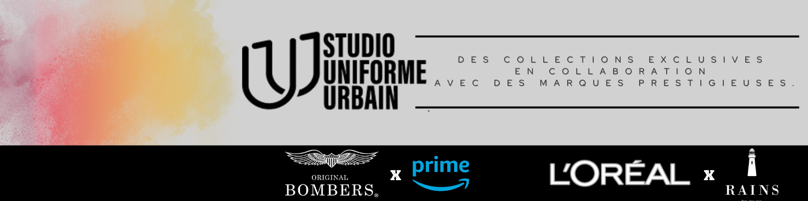

// Prospection & qualification de leads pour des collaborations
Premier challenge du bootcamp growth hacking à la Rocket School (mars 2025) : trouver de nouveaux clients potentiels pour des collaborations, en mobilisant scraping, enrichissement de données et qualification de leads.
Client
Studio Uniforme Urbain
Cadre
Cas d'école — Rocket School, mars 2025
Mon rôle
Prospection & qualification de leads
Le contexte
Premier challenge du bootcamp, avec un objectif business concret : identifier de nouveaux clients potentiels pour Studio Uniforme Urbain en vue de collaborations. L'enjeu n'était pas créatif mais méthodologique — construire une liste de prospects pertinents et qualifiés à partir de rien.
Ma démarche
Scraping : extraction de prospects via Lemlist et Phantombuster.
Enrichissement : complétion et fiabilisation des listes de contacts avec FullEnrich.
A/B testing : tests de variantes pour identifier les approches les plus performantes.
Tri manuel : qualification des leads un par un, pour s'assurer de la pertinence des listes finales avant toute prise de contact.
Supports visuels : tests de bannière LinkedIn et de signature mail, pour appuyer la démarche de prospection avec une identité cohérente.
Le rendu

Ce que ce projet démontre
Une capacité à mener une prospection digitale de bout en bout — de l'extraction brute de données à la qualification fine des leads — en combinant automatisation (scraping, enrichissement) et jugement humain (tri manuel), tout en produisant les supports visuels nécessaires pour professionnaliser la démarche.